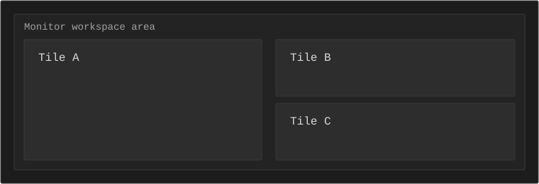

User guide
This page is the full user manual. It covers setup, controls, layout behavior, and bar configuration.
Table of contents
1. Intro
lxwm is a light, keyboard-first, tiling X11 window manager.
~/.config/lxwm/config
2. Install and run
make
sudo make installFor quick local testing:
make
./lxwmFor nested testing in Xephyr:
./run.sh3. Config basics
[core]
mod = Alt
focus_policy = click
bar_enabled = 1
ipc_enabled = 1
[variables]
term = xterm
[autostart]
cursor = xsetroot -cursor_name left_ptr
[keybinds]
Mod+Return = spawn $termReload config with Mod+r.
[variables], [autostart], and [keybinds] are global-scope sections.
Most other options are grouped by feature.
Core config directives
| Directive | Purpose | Accepted values | Example |
|---|---|---|---|
setmod |
Set primary mod key. |
Alt, Mod1, Super, Mod4, Control,
Ctrl
|
setmod Alt |
focus_policy |
Choose focus behavior. |
click, hover
|
focus_policy click |
bar_enabled |
Enable or disable built-in bar. |
1/0, on/off, true/false, yes/no
|
bar_enabled 0 |
ipc_enabled |
Enable or disable local IPC socket. |
1/0, on/off, true/false, yes/no
|
ipc_enabled 1 |
log_level |
Set runtime log verbosity. |
off, error, info, debug (or 0..3)
|
log_level error |
log_path |
Set log file path. | Any writable file path. | log_path /tmp/lxwm.log |
font |
Set UI font family/pattern. | Any system font or Xft font pattern. | font monospace |
font_size |
Set UI font size. | Integer 6..72. |
font_size 12 |
titlebar_focus_color |
Set focused window titlebar background color. | Hex color, for example #0b5f5f. |
titlebar_focus_color #0b5f5f |
titlebar_unfocus_color |
Set unfocused window titlebar background color. | Hex color, for example #2d2d2d. |
titlebar_unfocus_color #2d2d2d |
border_focus_color |
Set focused window border color. | Hex color, for example #0b5f5f. |
border_focus_color #0b5f5f |
border_unfocus_color |
Set unfocused window border color. | Hex color, for example #2d2d2d. |
border_unfocus_color #2d2d2d |
set $name |
Define variable for reuse. | Any variable name and string value. | set $term xterm |
autostart |
Run command on WM startup. | Any shell command line. | autostart nm-applet |
bind |
Create keybinding. | See action list below. | bind Mod Return spawn $term |
workspace_name |
Set workspace label in bar. | workspace_name <1..10> <label> |
workspace_name 1 main |
monitor_workspaces |
Assign workspace sets per monitor. |
monitor_workspaces <monitor> <spec>. Spec supports all,
odd, even, list (1,3,5), range (1-5), or mixed.
|
monitor_workspaces 1 odd |
Bind actions and arguments
| Action | Argument | Example |
|---|---|---|
spawn |
Command string | bind Mod Return spawn xterm |
ws, move_to_ws
|
Workspace 1..10
|
bind Mod 3 ws 3 |
move_float, resize_float
|
dx dy integer pair
|
bind Mod+Ctrl+h move_float -20 0 |
focus_next, focus_prev, focus_left, focus_right,
focus_up, focus_down, kill, quit,
reload, restart, toggle_float, fullscreen,
split_toggle, rotate_tree, swap_next, scratchpad
|
No argument | bind Mod f fullscreen |
IPC commands and socket examples are documented in External bars.
4. Keybindings
Bind syntax: bind <mods> <key> <action> [arg]
Default core bindings
| Keys | Action | Effect |
|---|---|---|
| Mod+Return | spawn $term |
Launch terminal. |
| Mod+r | reload |
Reload config and re-grab keys. |
| Mod+Shift+r | restart |
Restart lxwm in place. |
| Mod+Shift+q | kill |
Close focused window (WM_DELETE). |
| Mod+Ctrl+Shift+q | quit |
Exit lxwm. |
Focus and workspace navigation
| Keys | Action | Effect |
|---|---|---|
| Mod+h | focus_left |
Focus window to the left. |
| Mod+l | focus_right |
Focus window to the right. |
| Mod+k | focus_up |
Focus window above. |
| Mod+j | focus_down |
Focus window below. |
| Mod+1..9 | ws N |
Switch workspace. |
| Mod+Shift+1..9 | move_to_ws N |
Move focused window to workspace. |
Layout and window state
| Keys | Action | Effect |
|---|---|---|
| Mod+Shift+space | toggle_float |
Toggle floating mode for focused window. |
| Mod+f | fullscreen |
Toggle fullscreen for focused window. |
| Mod+s | split_toggle |
Flip split orientation at focused node. |
| Mod+Shift+s | rotate_tree |
Rotate workspace split orientation. |
| Mod+Shift+Return | swap_next |
Swap focused tiled window with next tiled window. |
| Mod+minus | scratchpad |
Send/recall scratchpad window. |
Floating move and resize
| Keys | Action | Effect |
|---|---|---|
| Mod+Ctrl+h/j/k/l | move_float |
Move focused floating window by 20px. |
| Mod+Ctrl+Shift+h/j/k/l | resize_float |
Resize floating window by 20px. On tiled windows this nudges splits. |
5. Mouse controls
| Input | Effect |
|---|---|
| Click window | Focus window. |
| Mod+Left drag | Move floating window. |
| Mod+Right drag | Resize floating window. |
| Click workspace button in bar | Switch workspace on that monitor. |
6. Workspaces and monitors
Use monitor workspace masks only when 2+ monitors exist.
monitor_workspaces 1 odd
monitor_workspaces 2 evenSet workspace button labels:
workspace_name 1 main
workspace_name 2 web7. Window rules
Rules determine how a window is managed after being opened.
Rule actions: float, tile, ws <1..10> (or
workspace <1..10>), monitor <1..16>.
| Directive | Match target | What it can set |
|---|---|---|
rule_class |
WM_CLASS class | float/tile, workspace, monitor |
rule_instance |
WM_CLASS instance | float/tile, workspace, monitor |
rule_title |
title substring | float/tile, workspace, monitor |
rule_class Firefox ws 3
rule_instance Navigator monitor 2
rule_title Picture-in-Picture float8. Layout model
lxwm uses a binary split tree per workspace. New tiled windows split the focused tile.

9. Bar configuration
The bar has three zones: workspace buttons, divider, and right-side modules.
Base Bar Block
Start with global bar layout and module ordering in [bar].
[bar]
modules = cpu,mem,time
module_sep = |
module_gap = 10
module_slot_w = 86
ws_gap = 0
ws_pad_x = 0
ws_pad_y = 0
ws_width = 28
divider_min_w = 80
right_zone_min_w = 220Workspace And Divider Colors
These belong in [bar] because they style shared bar areas.
[bar]
ws_active_color = #2f3f3f
ws_inactive_color = #232323
ws_urgent_color = #8c4a4a
divider_color = #2f3f3fPer-Module Blocks
Each module has a dedicated section: [bar.cpu], [bar.mem], etc.
[bar.cpu]
format = "CPU {cpu}"
color = #d8d8d8
[bar.mem]
format = "MEM {mem}"
color = #d8d8d8
[bar.time]
format = "%H:%M"
color = #d8d8d8
[bar.wifi]
format = "WIFI {strength}"
color = #0b5f5f
down_color = #a05555Module Format Placeholders
Format strings use variables specific to each module.
| Module | Format key | Example |
|---|---|---|
| CPU | [bar.cpu] format |
CPU {cpu} |
| Memory | [bar.mem] format |
MEM {mem} |
| Time | [bar.time] format |
%H:%M |
| WiFi | [bar.wifi] format |
WIFI {strength} |
| Ethernet | [bar.ethernet] format |
ETH {iface} |
| IP | [bar.ip] format |
IP {addr} |
| Battery | [bar.battery] format |
BAT {battery} |
| CPU temp | [bar.cputemp] format |
TEMP {temp} |
| Disk | [bar.disk] format |
DISK {used} / {total} |
Module Names And Aliases
Available modules: cpu, mem, time, wifi,
ethernet, ip, battery, cputemp, disk.
Accepted aliases in bar_modules: memory for mem, clock
for time, eth for ethernet, batt for battery,
temp for cputemp.
Module Variable Reference
| Module | Variables |
|---|---|
| cpu | {percent}, {cpu} |
| mem | {percent}, {mem} |
| wifi | {strength}, {wifi}, {state} |
| ethernet | {iface}, {ethernet}, {state} |
| ip | {addr}, {ip}, {state} |
| battery | {percent}, {battery} |
| cputemp | {temp}, {cputemp} |
| disk | {used}, {free}, {avail}, {total},
{used_total}, {disk}
|
Disk Options
| Key | Default | Valid values |
|---|---|---|
[bar.disk] mode |
used_total |
used, free (or avail), used_total
|
[bar.disk] path |
/ |
mount path |